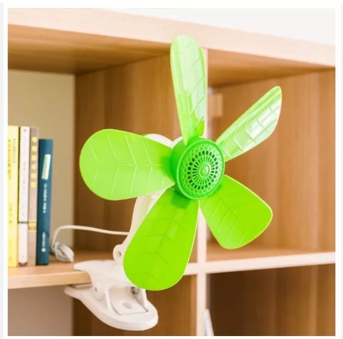
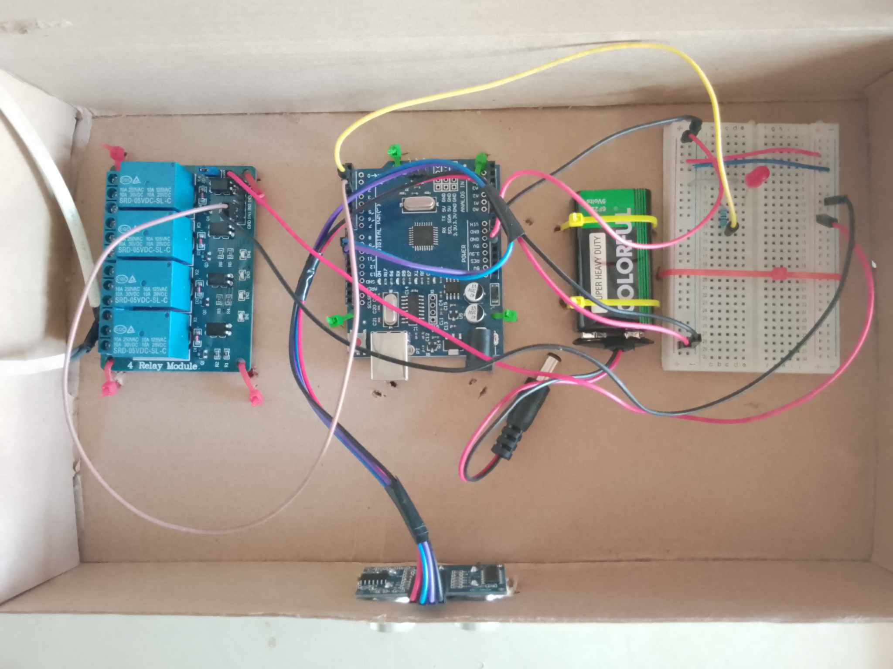
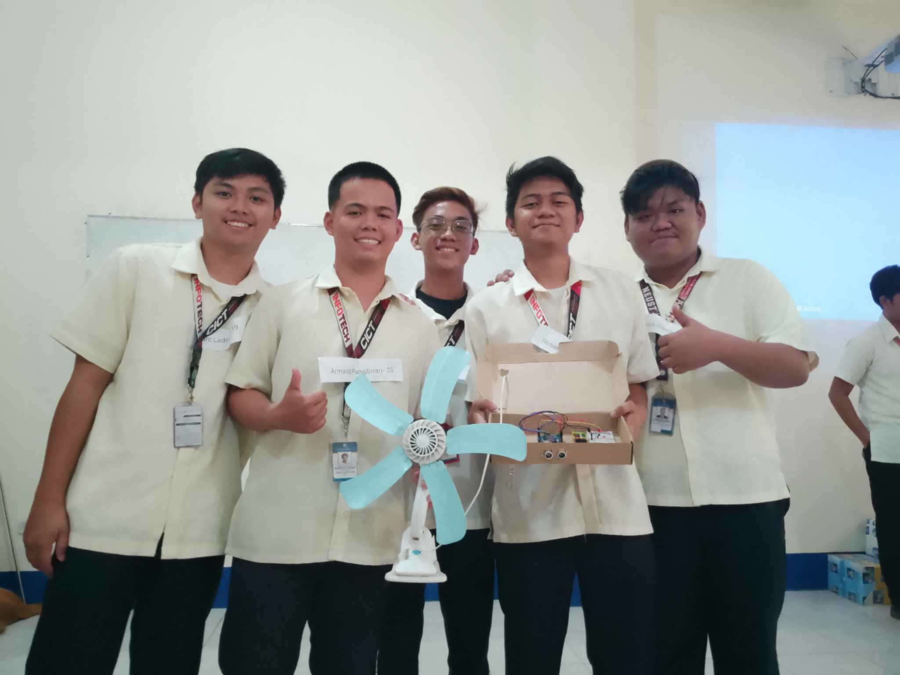

with Arduino Uno — A smart fan that automatically turns on/off based on human presence detection.

This project is an Automatic Fan System that uses an Arduino Uno microcontroller and an Ultrasonic Sensor (HC-SR04) to detect human presence. When a person is detected within a certain distance, the fan automatically turns ON. When no presence is detected, the fan turns OFF — promoting energy efficiency and convenience.
This is a practical application of embedded systems and IoT concepts, demonstrating how sensors can automate everyday appliances to save electricity and improve user experience.
Arduino IDE (C++)
Detects human presence using ultrasonic sensor technology.
Automatically turns off when no one is around to save electricity.
Detection distance can be adjusted via code (e.g., 30cm to 100cm).
Instant ON/OFF response when presence is detected or lost.
LED indicator shows current fan status (ON/OFF).
Relay module ensures safe switching of high-voltage fan.
Click the pictures to zoom | Watch the test video

Complete circuit showing connections between Arduino Uno, Ultrasonic Sensor (HC-SR04), Relay Module, and Fan.

The fully assembled automatic fan system — ready for testing and deployment.
Watch the automatic fan in action — detecting human presence and turning ON/OFF automatically.
// Automatic Fan using Ultrasonic Sensor with Arduino Uno #define TRIG_PIN 9 #define ECHO_PIN 10 #define RELAY_PIN 7 #define LED_PIN 13 #define DISTANCE_THRESHOLD 50 // in cm void setup() { pinMode(TRIG_PIN, OUTPUT); pinMode(ECHO_PIN, INPUT); pinMode(RELAY_PIN, OUTPUT); pinMode(LED_PIN, OUTPUT); digitalWrite(RELAY_PIN, LOW); // Fan OFF initially digitalWrite(LED_PIN, LOW); Serial.begin(9600); } void loop() { // Send ultrasonic pulse digitalWrite(TRIG_PIN, LOW); delayMicroseconds(2); digitalWrite(TRIG_PIN, HIGH); delayMicroseconds(10); digitalWrite(TRIG_PIN, LOW); // Measure echo duration long duration = pulseIn(ECHO_PIN, HIGH); int distance = duration * 0.034 / 2; Serial.print("Distance: "); Serial.print(distance); Serial.println(" cm"); // Check if person is within range if (distance > 0 && distance < DISTANCE_THRESHOLD) { digitalWrite(RELAY_PIN, HIGH); // Turn FAN ON digitalWrite(LED_PIN, HIGH); // LED ON Serial.println("Person detected - FAN ON"); } else { digitalWrite(RELAY_PIN, LOW); // Turn FAN OFF digitalWrite(LED_PIN, LOW); // LED OFF Serial.println("No person - FAN OFF"); } delay(500); // Small delay for stability }
Code uploaded via Arduino IDE | Adjust DISTANCE_THRESHOLD as needed
Sir Bulaklak
Arduino & IoT Adviser
Nueva Ecija University of Science and Technology
College of Information and Communication Technology